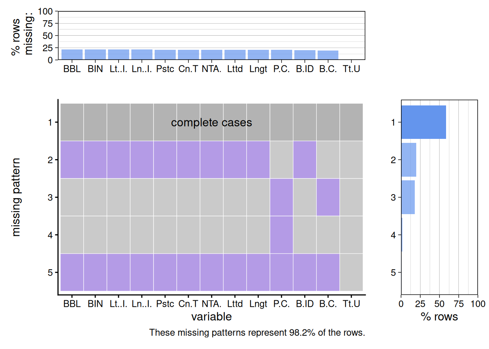
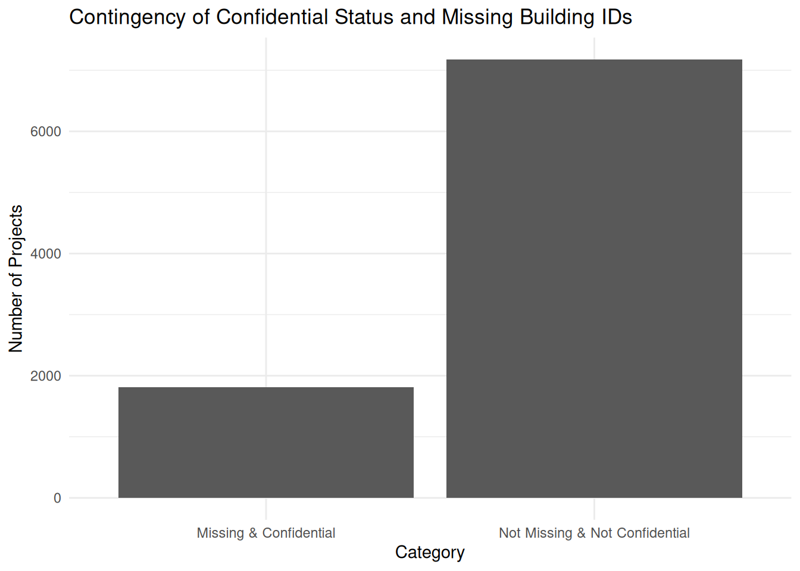
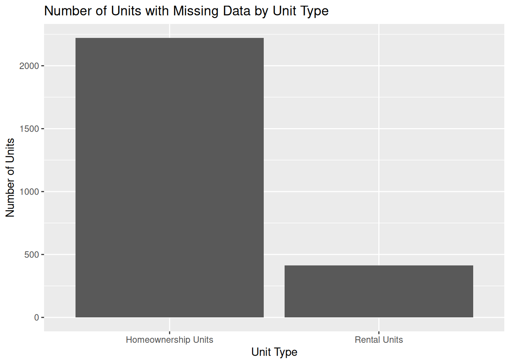
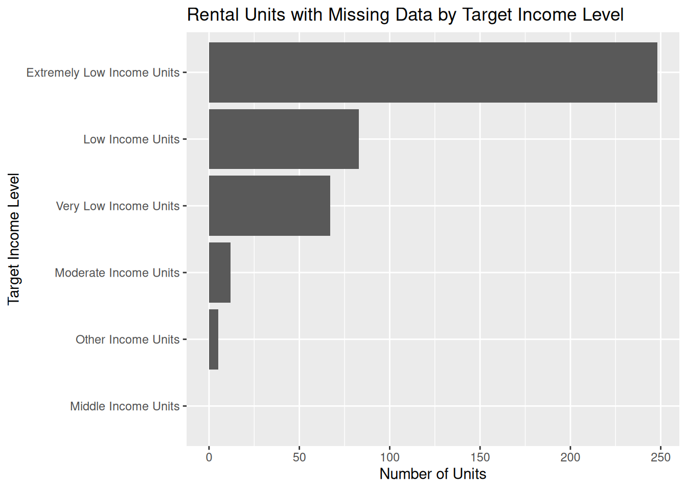
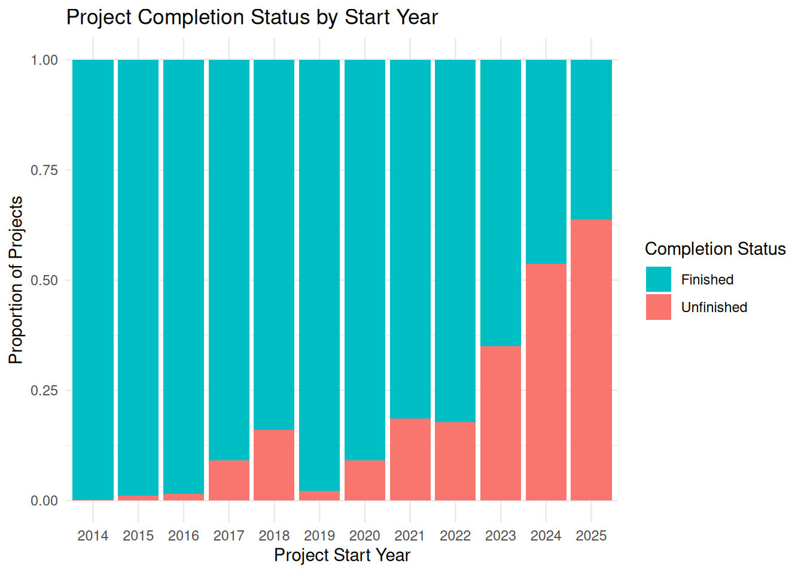
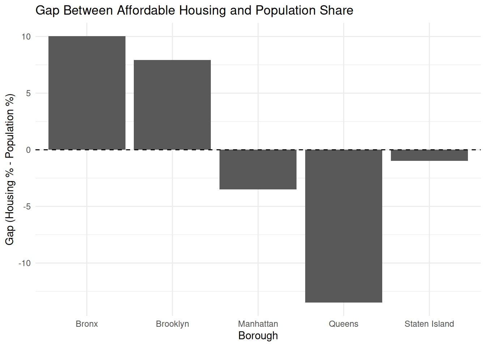
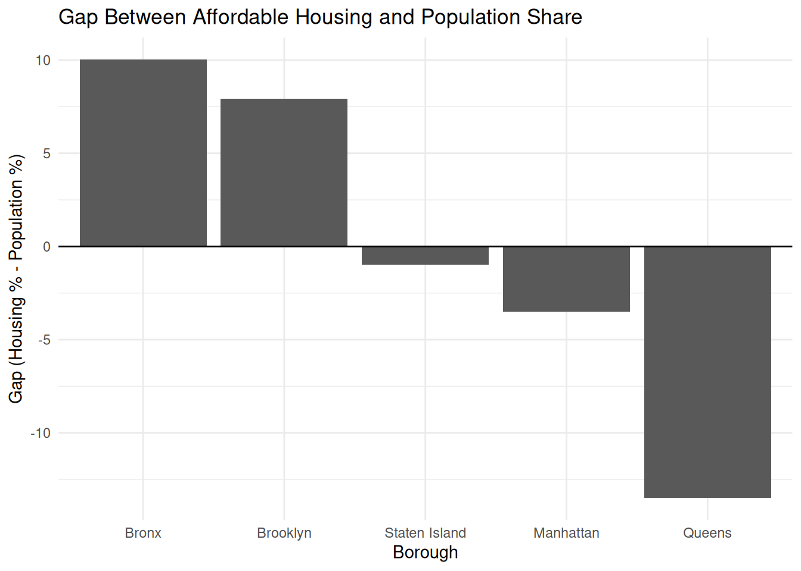
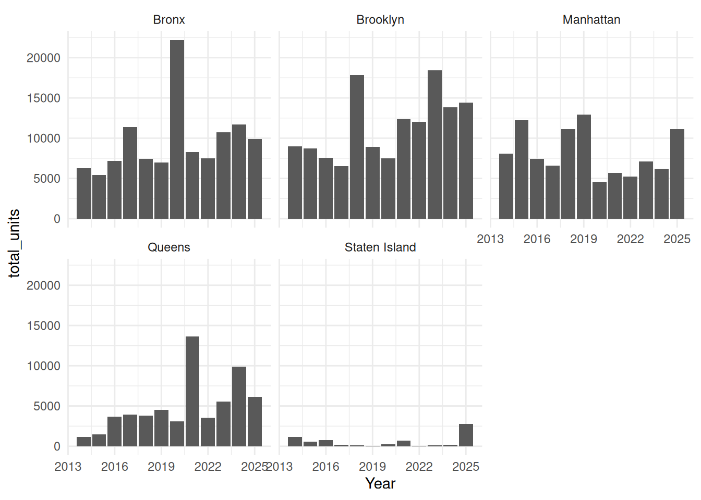
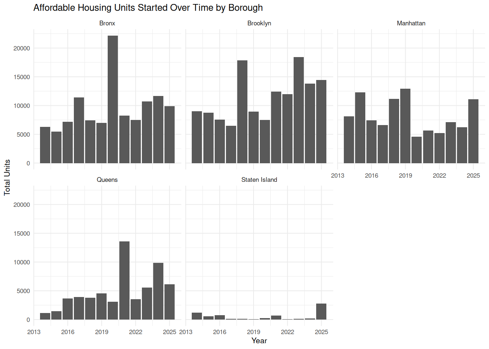

library(tidyverse)
df <- read_csv("data/affordablehousing.csv")2 Affordable Housing
Makena Fong
2.1 Introduction
Recently, I have been highly involved in the process of looking for an apartment and deciding whether it is best to stay in on campus housing or move off campus. Housing in New York City is expensive, so it is typical for people to have roommates or turn living rooms into additional bedrooms, essentially doing anything they can to make it work. I decided to look at the Affordable Housing data set because I know so many people struggle to afford rent. I wanted to see what assistance the city provides to low income families to help them stay in New York City. I wanted to learn more about the distribution of affordable housing in NYC. Since 2014, there have been 2 different programs to help create more affordable housing. They are the Housing New York plan (1/1/2014-12/31/2021) and the Housing Our Neighbors: A Blueprint for Housing & Homelessness plan (1/1/2022-present). These plans help to improve the quality of housing, support people experiencing homelessness, and increase homeownership opportunities.
Source: Housing Our Neighbors Project
2.2 Data
2.2.1 Description
This data is collected through various Housing Preservation and Development programs. Each row represents one building in a specific housing development or preservation project. Each column contains details about the location of the building, when construction began, details about the number of units divided by target income level, and the number of bedrooms. This data set is 8,983 rows and 41 columns. It is updated quarterly and was last updated March 20th, 2026.
Buildings may appear multiple times if they were involved in multiple housing projects, meaning the project counts do not necessarily represent unique buildings. There are also some projects that were started to assist homeowners or special populations that are marked “CONFIDENTIAL” so we don’t have all of the data for certain projects. In addition, many projects are still in progress and therefore do not yet have building or project completion dates. Analysis of this data was sometimes done by project but also sometimes by unit so some boroughs may have fewer projects overall but larger average developments.
2.2.2 Missing Value Analysis
library(redav)
plot_missing(df, num_char = 4, max_cols = 13, max_rows = 5) 
From this graph, we can see that a majority of the columns with missing data contain no information about the location of the project, but do have a project and building completion date. This helps to verify the statement in the introduction that the data set contains projects labeled “CONFIDENTIAL” where details about the exact location of the building and any other details that could be traced back to the project itself are hidden. The next row with the most missing data is those with information about the location but no project and building completion date, which again makes sense as projects started more recently are not complete yet.
contingency_df <- df |>
mutate(
Category = case_when(
is.na(`Building ID`) & `Project Name` == "CONFIDENTIAL" ~ "Missing & Confidential",
!is.na(`Building ID`) & `Project Name` == "CONFIDENTIAL" ~ "Not Missing & Confidential",
is.na(`Building ID`) & `Project Name` != "CONFIDENTIAL" ~ "Missing & Not Confidential",
!is.na(`Building ID`) & `Project Name` != "CONFIDENTIAL" ~ "Not Missing & Not Confidential"
)
) |>
count(Category)
ggplot(contingency_df, aes(x = Category, y = n)) +
geom_col() +
labs(
title = "Contingency of Confidential Status and Missing Building IDs",
x = "Category",
y = "Number of Projects"
) +
theme_minimal()
After filtering the data into projects that are both missing building ID and confidential, contains building ID but not confidential, confidential but missing building ID, and contains building ID and not confidential, we can see that all rows missing a building ID have been labeled “CONFIDENTIAL”.
missing <- df |>
filter(is.na(`Building ID`)) |>
rename(`Rental Units` = `Counted Rental Units`, `Homeownership Units` = `Counted Homeownership Units`)|>
pivot_longer(cols = c(`Rental Units`, `Homeownership Units`), names_to = "Type", values_to = "Counted Units") |>
aggregate(`Counted Units` ~ Type, FUN = sum)ggplot(missing, aes(x = Type, y = `Counted Units`)) +
geom_col(position = "dodge") +
labs(
title = "Number of Units with Missing Data by Unit Type",
y = "Number of Units",
x = "Unit Type"
)
From this graph we can see that a majority of the projects with missing data are projects that involve homeownership units. This also helps us to verify the statement provided in the data set introduction that some information was redacted because it was related to homeownership.
missing_rental <- df |>
filter(is.na(`Building ID`),`Counted Rental Units` > 0 ) |>
select(`Extremely Low Income Units`:`Other Income Units`) |>
pivot_longer(cols = c(`Extremely Low Income Units` : `Other Income Units`), names_to = "Income", values_to = "Counted Units") |>
aggregate(`Counted Units`~ Income, FUN = sum)
ggplot(missing_rental, aes(y = fct_reorder(Income, `Counted Units`), x = `Counted Units`)) +
geom_col() +
labs(
title = "Rental Units with Missing Data by Target Income Level",
y = "Target Income Level",
x = "Number of Units"
)
From this graph we can see that most of the rental units with missing data are “Extremely Low Income Units”. In the data set introduction, we were told that some information was considered confidential because it was related to a “special population”. This suggests that projects involving extremely low income units may be more likely to be associated with confidential or special populations.
unfinished <- df |>
filter(is.na(`Project Completion Date`)) |>
mutate(`Project Start Date` = as.Date(`Project Start Date`, format = "%m/%d/%Y")) |>
mutate(`Project Start Date` = format(`Project Start Date`, "%Y")) |>
count(`Project Start Date`, name = "Unfinished")
finished <- df |>
filter(!is.na(`Project Completion Date`)) |>
mutate(`Project Start Date` = as.Date(`Project Start Date`, format = "%m/%d/%Y")) |>
mutate(`Project Start Date` = format(`Project Start Date`, "%Y")) |>
count(`Project Start Date`, name = "Finished")
compare <- left_join(unfinished, finished) |>
pivot_longer(cols = `Unfinished`:`Finished`, names_to = "Completion Status", values_to = "count") |>
group_by(`Project Start Date`) |>
mutate(prop = count / sum(count, na.rm = TRUE))
ggplot(compare, aes(x = `Project Start Date`, y = prop, fill = `Completion Status`))+
geom_col() +
scale_fill_discrete(direction = -1) +
theme_minimal() +
labs(
title = "Project Completion Status by Start Year",
y = "Proportion of Projects",
x = "Project Start Year"
)
From this graph we can see that as the start year gets closer and closer to today, the proportion of incomplete projects increases. There is also a slight peak in 2018 and a dip in 2019 of the number of projects that remain unfinished.
2.3 Results
2.3.1 Question 1: Distribution of Affordable Housing Projects Across New York City
library(sf)
boroughs <- read_sf("data/nyc_boroughs/nybb.shp")
points_sf <- df |>
select(Longitude, Latitude) |>
na.omit() |>
st_as_sf(coords = c("Longitude", "Latitude"), crs = 4326)
ggplot() +
geom_sf(data = boroughs) +
geom_sf(data = points_sf, size = .1, alpha = 0.3) +
theme_minimal() +
labs(
title = "Distribution of Affordable Housing Projects Across NYC"
)
We can see there is a high concentration of affordable housing projects in the Bronx, Upper Manhattan and the northeastern part of Brooklyn. There are much fewer projects in Lower Manhattan in the West Village and FIDI area. There is a higher concentration in the East Village/Stuyvesant Town area. Projects are more spread out in Queens and there are very few projects in Staten Island. Source: NYC Boroughs Shape File
pop <- read_csv("data/nyc_pop.csv", col_select = c(Borough, `2020 - Boro share of NYC total`)) |> filter(Borough != "NYC Total")
pop <- pop |> mutate(`Borough Population` = as.numeric(str_remove(`2020 - Boro share of NYC total`, "%")))
df$`Project Start Date` <- as.Date(df$`Project Start Date`, format = "%m/%d/%Y")
df_2020 <- df[df$`Project Start Date` >= "2020-01-01" & df$`Project Start Date` <= "2020-12-31",]
library(dplyr)
percentages <- df |>
count(Borough, name = "count") |>
mutate(`Affordable Housing Projects` = count / sum(count) * 100) |>
select(-count) |>
as.data.frame()compare_percent <- left_join(pop, percentages)
gap_plot <- compare_percent |> mutate(gap = `Affordable Housing Projects` - `Borough Population`)
ggplot(gap_plot, aes(x = fct_reorder(Borough, gap, .desc = TRUE), y = gap)) +
geom_col() +
geom_hline(yintercept = 0) +
theme_minimal() +
labs(
title = "Gap Between Affordable Housing and Population Share",
y = "Gap (Housing % - Population %)",
x = "Borough"
)
From this graph, we can see that the Bronx and Brooklyn have a higher share of the affordable projects in comparison to their share of the total population. According to the NYC True Cost of Living report, 75% of residents in the Bronx do not meet their true cost of living. Approximately 65% of Brooklyn and Queens residents don’t meet their true cost of living and 55% and 48% for Manhattan and Staten Island respectively. This would explain why the Bronx and Brooklyn have a higher share of affordable housing projects in comparison to their share of population since more residents are demonstrating the need for support. Queens seems to have a large share of the population but not a very large share of the affordable housing projects considering there is similar proportion of residents to Brooklyn who don’t meet the true cost of living. It could be that since the second plan is still in progress, that the city will be turning to Queens to start more projects.
Source: NYC True Cost of Living Report
2.3.2 Question 2: Impact of Target Income Level on Project Location
cols <- c("Extremely Low Income Units",
"Very Low Income Units",
"Low Income Units",
"Moderate Income Units",
"Middle Income Units",
"Other Income Units")
points_sf <- df |>
select(all_of(cols), Longitude, Latitude) |>
na.omit() |>
rowwise() |>
mutate(
max_val = max(c_across(all_of(cols)), na.rm = TRUE),
across(all_of(cols),
~ ifelse(.x == max_val, .x, NA))
) |>
ungroup() |>
st_as_sf(coords = c("Longitude", "Latitude"), crs = 4326) |> pivot_longer(cols =`Extremely Low Income Units`:`Other Income Units`, names_to = "income level", values_to = "units" ) |> filter(!is.na(units)) |> mutate(`income level` = fct_relevel(`income level`, cols))ggplot() +
geom_sf(data = boroughs) +
geom_sf(data = points_sf, size = 0.2, alpha = 0.3) +
facet_wrap(~ `income level`) +
labs(
title = "Affordable Housing Projects by Primary Target Income Level"
) +
theme_minimal() +
theme(
panel.grid.major = element_blank(),
panel.grid.minor = element_blank(),
axis.text = element_blank(),
axis.ticks = element_blank(),
axis.title = element_blank()
)
We can see on the graph that there are generally more Low Income Units and Middle Income units. All levels of income have concentrations of projects in the Bronx and also in northeast Brooklyn. This tells us that the location of each project was less determined by the target income level and rather by neighborhood and providing access to affordable housing for all of the different income levels.
One issue I did run into while creating this graph was that each project had units for multiple income levels. To create this graph, I decided to figure out what income level the majority of the units in the building were for and use that income level as the target income level associated with the building. This simplification allowed each project to be assigned a single primary income category, although many projects serve multiple income groups. Then I was able to create this graph.
2.3.3 Question 3: New Projects Over Time
yearly_borough <- df |>
mutate(`Project Start Date` = as.Date(`Project Start Date`, "%m/%d/%Y"),
Year = as.numeric(format(`Project Start Date`, "%Y"))) |>
group_by(Year, Borough) |>
summarise(total_units = sum(`Total Units`, na.rm = TRUE), .groups = "drop")
ggplot(yearly_borough, aes(x = Year, y = total_units)) +
geom_col() +
facet_wrap(~Borough) +
theme_minimal(8) +
labs(
title = "Affordable Housing Units Started Over Time by Borough",
y = "Total Units",
x = "Year"
)
From this graph we can see that there was a spike in projects in the Bronx in 2020. We can also see that at the beginning of the Housing New York plan, there was primarily a focus on the Bronx, Brooklyn, and Manhattan. Eventually the focus shifted away from Brooklyn and Manhattan to Queens where there was an increase in projects started over time. Staten Island relatively has very few projects but a majority of projects in Staten Island were started in 2025. We can also see that each borough has a spike with Brooklyn in 2018, Manhattan in 2019, the Bronx in 2020, and Queens in 2021. This pattern may reflect shifts in geographic focus within the Housing New York plan, where development efforts concentrated more heavily in certain boroughs during specific years.
2.4 Conclusion
Overall, this analysis suggests that affordable housing development in NYC is concentrated in specific boroughs and neighborhoods, while areas such as Queens may still be underserved relative to population need. Through this project, I was able to better understand when and where the city decides to begin projects focusing on providing more affordable housing options to different people in different financial situations. I was able to visualize the distribution of affordable housing projects by borough and better understand the difference between where affordable housing is needed and where it is being provided. I hope to look more into this data in the future seeing more detail about the individual neighborhoods, seeing if there is a higher concentration of new projects in boroughs with higher rates of poverty and if that is where the city first started implementing these affordable housing projects. From the information I gathered through this data, I hope to see more affordable housing options in Queens due to the large proportion of residents in Queens and the lack of projects in comparison especially because a large proportion of people don’t meet the true cost of living.